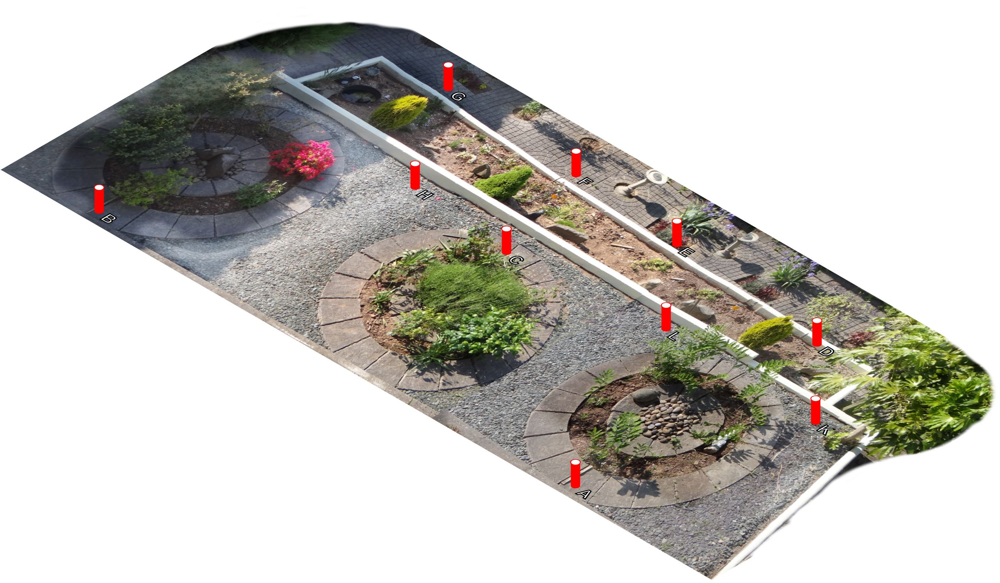
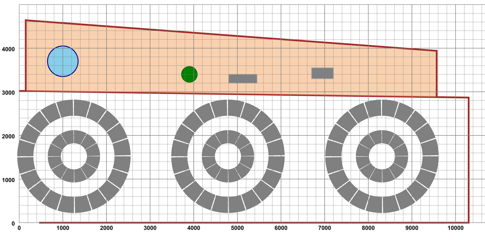

The system designed is of course influenced by the external factors of the garden itself and the track components from which the railway will be built. The garden area chosen is approximately 10m x 4m on two levels:
Figure 1. The Garden for the Railway
|  |
Both levels are substantially flat[12] with a step of about 250mm between, so it should be possible to climb a connecting embankment. (Generally gradients should be less than 1 in 40 and certainly no more than 1 in 25). The area was surveyed (marked by the red survey points shown above) and a simplified plan of the garden drawn up:
Figure 2. The garden plan
|  |
I decided that the railway would be built at SM32 gauge/scale, also known as 16mm. The track has a gauge of 32mm, and is taken to represent a 2ft narrow-gauge line[13] so the scale is 16mm to the foot or 1:19. As such, models of narrow-gauge locomotives are large enough to be totally steam-powered. The tracks themselves would not carry electrical power — all engines would be self-powered, and remotely controlled. The commercially available track had a small set of points of different tightness and flexible track sections of some 900mm length. This meant that apart from the fixed-design points, the rest of the track could be “freeform”, subject of course to a recommended minimum turn radius, which whilst being dependent upon locomotive wheelbase, would be about 900-1000 mm.
The original design consists of five major sections:
A declarative description, as an XML structure, of the design environment, consisting of background components (e.g. pictures of
the garden and schematics of fixed sections such as walls, paving and plants) and a series of layouts. A layout is described as a
sequence of (mainline) track sections of straights, curves and points, each represented by an XML element describing length,
radius and/or turn angle. Branch lines are children sequences of a point element. Where necessary track connections
between leaves of the tree are joined to make a complete graph thrrough named link declarations.
A geometry computational engine, written in XSLT3, which calculates the position and orientation of each track section, and produces a map of the layout, keyed by section 'name', each entry describing both the track segments of the section and the two-way connectivity between section ends.
A graphical display of the design as an SVG tree. Background elements are generated as SVG groups from the enviroment description. Track components are generated from unit descriptions and positioned with use instructions. Within this, some components which can differ in display dependent upon state, such as points, are represented by several views, each classed separately. The overall display can be subject to transform, most noteably an isometric one. Textural styling and initial visibility is defined in a series of CSS stylesheets.
An XSLT3 stylesheet, using Saxon-JS extensions, and invoked from an outer XHTML document, which populates the XHTML with a series of interactive controls, and generates the detailed layout internal structures and SVG graphics to be embedded in the web page. Templates respond to interaction, such as button state changes, or clicking on points levers, altering the local CSS state of other components and controls.
Adding “railway engines” as SVG objects, which are presented in both plan and isometric views from a simple “block-and-cylinder” model. An event-based system animates these to run along tangential paths of the track sections, using SVG animation facilities. Speed and direction of travel can be controlled interactively for multiple engines. Events are generated at the conclusion of animations, and are caught by templates that consult the layout map to determine the next sector to enter, then calculate the necessary animation duration, given length and speed, and start up the path-following animation. Speed change involves stopping a current animation, recalculating duration for the remaining section path and restarting an new animation partway through. Issues on collision detection (“train crashes”) will be discussed.
As far as the software mix is concerned, the top-level XHTML document contains some constant background components and div
containers which will be populated, a script element containing a very small set of global JavaScript functions, for primary
control of animations and mapping from screen to SVG co-ordinates, and an invocation of Saxon-JS with a precompiled program from an XSLT
source of some 20 files and perhaps some 3000 source lines. This program takes as input a file containingg definitions of the garden,
possible layouts and locomotives. Textural styling is supported by a set of associated (static) CSS files.
There are a number of (Javascript) libraries for supporting SVG effects and animation, and pretty much all the written guides to “advanced” SVG use a combination of some of these, but I wanted to explore how much could be done almost entirely in XSLT3.0. All the programming is limited to XDM data types, XHTML, SVG, CSS and XSLT3.0 with Saxon-JS interaction extensions, with a minimum of (perhaps a dozen) globally defined small JavaScript functions, mostly to invoke,query and stop SVG animations.